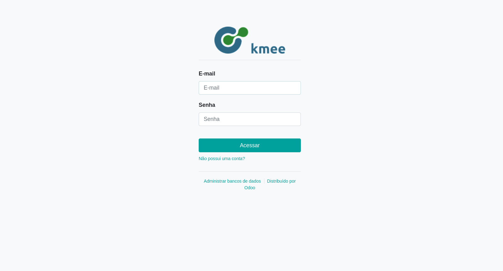
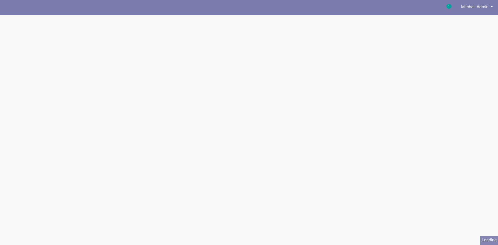

O Login no Odoo¶
O login no Odoo, deve ser feito através de login, geralmente email e senha. Através da URL:
*** Settings ***
Resource ../odoo.robot
*** Variables ***
${BROWSER} firefox
*** Test Cases ***
Capture a screenshot of Odoo
Open browser ${ODOO_URL}/web/login browser=${BROWSER}
Capture page screenshot login.png
Valid Login
Login
Capture page screenshot main.png
Main Menu
Wait Until Page Contains Element //i[@class="fa fa-th-large"]
Click Element //i[@class="fa fa-th-large"]
Capture page screenshot main-menu.png

Após o login o usuário é redirecionado para a tela principal:

No canto superior direito é possível acessar todos os aplicativos: